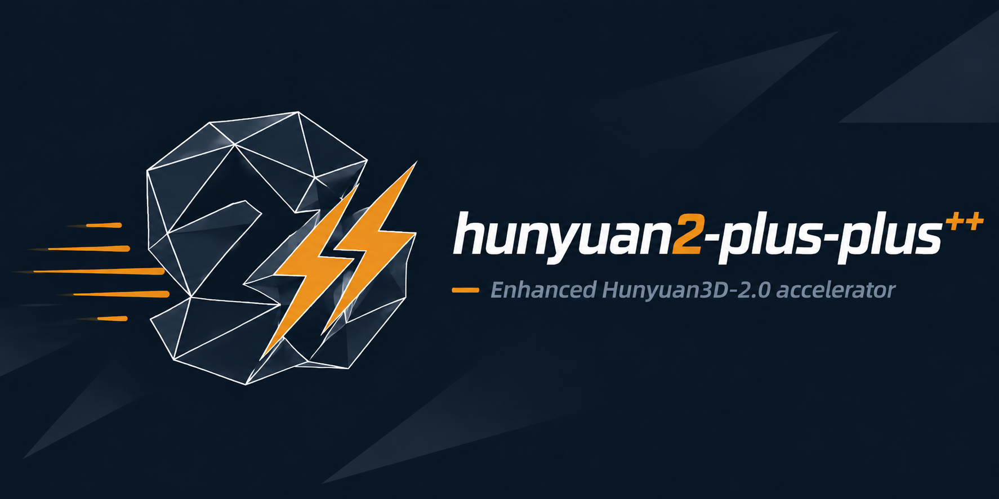
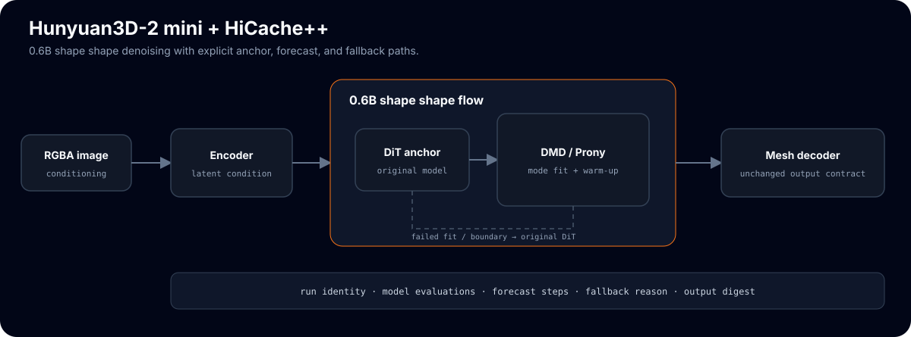

DMD exponential cache for Hunyuan3D-2 mini sampling
Tencent's 0.6B image-to-3D model with a training-free exponential velocity forecaster wired into its flow-matching denoise loop. The cache computes the DiT on 1/interval of the steps and forecasts the velocity on the rest.
# clone + install (model weights downloaded separately from upstream) git clone https://github.com/Archerkattri/hunyuan2-plus-plus.git cd hunyuan2-plus-plus pip install -r requirements.txt pip install -e . # weights: Tencent-Hunyuan/Hunyuan3D-2 (Hunyuan3D-2mini), not committed
01
Evidence
| Base model | 0.6B parameters — Hunyuan3D-2 mini shape generator (Hunyuan3DDiTFlowMatchingPipeline) |
|---|---|
| DMD interval-5 quality | 0.793 F@0.05 on Toys4K (n = 10) vs 0.794 uncached baseline — within run noise |
| Skipped compute | (interval-1)/interval of DiT forward passes skipped; DiT computed on 1/interval of steps |
| DMD window floor | 4 snapshots (3 pairs) minimum to fit a complex pole; below it falls back to Hermite |
| Default schedule | interval 5, first_enhance 2, history 5, max_order 2, sigma 0.5 |
| CPU contract tests | 5 passed — cache identity, timing and fallback accounting (CI green) |
02
Media


03
Install & verify
# CPU contract tests (tests/test_hicache_dmd_adapter.py) pytest tests/ -q # expected: 5 passed (CI green per v0.1.1 release notes)
04
Limits
What this release does not claim (from the release notes):
- GPU speedup validation and weight-gated demo cells. (No GPU hardware in this release.)
05
Family
| Base model | Hunyuan3D-2, accelerated by the hicache-plus-plus forecast core |
|---|---|
| Same base | hunyuan2-plus |
| All 13 adapters | TRELLIS: faster-trellis, faster-trellis-plus-plus · TRELLIS.2: fast-trellis2, hermit-trellis2, hermit-trellis2-plus-plus · Hunyuan3D-2: hunyuan2-plus, hunyuan2-plus-plus · Hunyuan3D-2.1: hunyuan2.1-plus, hunyuan2.1-plus-plus · SAM: sam3d-plus, sam3d-plus-plus, fastsam3d-plus, fastsam3d-plus-plus |